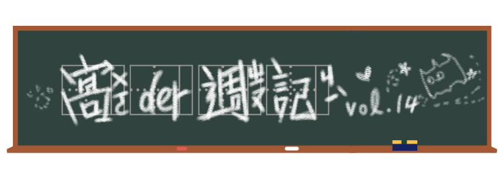

初五開工，培養meme也不得不工作(X)。
抽25張牌
起源
過年在家聚賭是玩牌還是打麻將ㄋ，有沒有人家裡玩UNOㄚ？（我是沒有聽過啦）總之，最近出了個跟友情破壞王者UNO有關的迷因，姑且就叫它「抽25張牌」吧。
起初，只是Facebook上一名隨機可見的路人，在2020年1月4日時上傳了兩張正在玩UNO的生活照。左圖可以看見他們好好運用了UNO當中的空白牌，上面寫著「打電話／傳簡訊給你的前任 或 抽25張牌」，而右邊拿著一疊牌的男子則暗示了他的選擇。
散佈
隔天，這兩張照片和它非常catchy的貼文內容「Say No More」（不必多說），被一起轉貼到Twitter上面，隨後產生大量的改作（而且空白牌也相當好塗改）。
經典二選一
抽25張牌其實和很多迷因的本質類似，都是在兩個選項中做抉擇——然後選了荒謬的那一個，使整件事情看起來更加可笑。
不過抽25張牌的精髓，在於更改空白牌中第一個大冒險的選項，或者更精確一點，選項的內容要與你的「恐懼」或「不願面對的事情」有關，如此一來對抽牌的人而言，抽25張牌根本就算不上是地獄，要抽光整副牌都甘願。
meme man wurds
最近另一個迷因，主角是我們熟悉的好朋友Meme Man關於Meme Man的介紹，可參考Surreal Meme→。。
起源
在網路上有時為了方便或是純粹為了好玩，人們會故意拼錯字。如果有追蹤一些社群網美毛孩，可能常常會看到像是snacc、inpawtant、fury這類加上了寵物感覺的可愛變形字，或者看看Doge周遭飄浮的錯誤文法的單字，也可以找到一點感覺。不管是為了搞怪還是裝可愛，亂拼字的現象屢見不鮮。
散佈
所以坦白來說，這其實不是一個新的迷因，而是一些已有的迷因remix。利用蠢蠢的情境配上Meme Man強調某個字的動作，呈現毫無根據的自信，再從蹩腳的錯誤拼法中看出主角裝模作樣的意圖。
這波Meme Man說一些怪怪的字風潮，可以歸功於2019年Stonks的興起。Stonks（Stocks）用來表示某個和經濟（發大財）相關的情況（實際上可能賠本）、Shef（Chef）表示廚藝相關情境（實際上可能根本不怎麼樣），動作越蠢、越日常，跟強調的字詞反差越大，效果越好。
於是繼Stonks大放異彩後，大家開始掌握這個迷因的主軸，開始發明更多怪怪字，當然，蠢蠢的情境還是不可少的。
中文ㄉ優勢
那麼，問題來了。拼錯的英文簡單，中文要怎麼個拼錯法？
台灣有才的翻譯者們為大家找到了出路。嚴格說起來，那些刻意拼錯的英文或許更像是中文裡的諧音字，只要能讓人一眼看出它是錯的，一念出來又能看出它原本的樣子就任務達成。而我們絲毫不需要擔心，中文同一個音的字有一個字典那麼多。
而且台灣國語的口音還為我們增添了更多趣味。